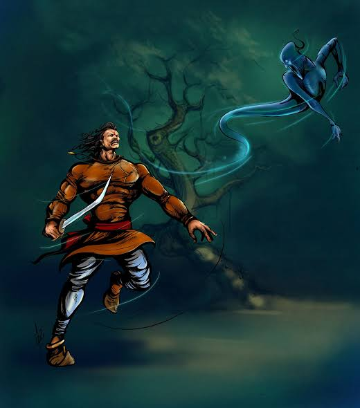

3.પતિ કોણ છે ? |
વર્ષો પહેલા યમુના કિનારે ધર્મસ્થલ નામનું નગર હતું. ત્યાં એક બ્રાહ્મણ રહેતો હતો, જેનું નામ ગણપતિ હતું. તેની એક સુંદર અને ગુણવાન પુત્રી હતી. લગ્નની ઉંમરે પહોંચતા જ તેણે અને તેનો આખો પરિવાર તેના માટે યોગ્ય પતિની શોધ કરવા લાગ્યો. એક દિવસ બ્રાહ્મણ કોઈના ઘરે પૂજા કરવા ગયો અને તેનો દીકરો પણ ભણવા ઘરની બહાર ગયો. તે સમયે ઘરમાં માત્ર બ્રાહ્મણની પુત્રી અને તેની પત્ની જ હતાં. તે જ સમયે એક બ્રાહ્મણ છોકરો તેમના ઘરે આવે છે. બ્રાહ્મણની પત્ની છોકરાનું સારી રીતે સ્વાગત કરે છે અને તેને ભોજન કરાવે છે. બ્રાહ્મણની પત્નીને છોકરાનો સ્વભાવ ગમે છે અને તે તેની સાથે તેની પુત્રીના લગ્ન કરવાનું વચન આપે છે.
બીજી બાજુ, જેના ઘરે બ્રાહ્મણ ગણપતિ પૂજા કરવા ગયો હતો, તે પણ એક બ્રાહ્મણ છોકરાને મળે છે અને તેની પુત્રીને તેની સાથે પરણાવવાનું વચન આપે છે. બ્રાહ્મણનો દીકરો ત્યાંના એક છોકરાને પણ એ જ વચન આપે છે જ્યાં તે ભણવા ગયો હતો. થોડા સમય પછી ગણપતિ અને તેનો દીકરો બંનેએ પસંદ કરેલા છોકરા સાથે ઘરે પહોંચે છે. ઘરમાં બીજા બ્રાહ્મણ છોકરાને જોઈને બંને ચોંકી જાય છે. હવે બધા મૂંઝવણમાં છે કે એક જ છોકરી છે અને ત્રણેય અલગ-અલગ છોકરાઓ સાથે લગ્ન કરવાનું વચન આપ્યું છે, હવે શું થશે? છોકરીના લગ્ન કોણ કરાવશે?
 આ મૂંઝવણ વચ્ચે, એક પાડોશી તેમના ઘરે સમાચાર સાથે આવે છે કે તેમની પુત્રીને વિસ્તારમાં સાપ કરડ્યો છે. આખો પરિવાર ભાગી જાય છે અને ત્રણેય બ્રાહ્મણ છોકરાઓ છોકરી પાસે પહોંચી જાય છે, પરંતુ ત્યાં સુધીમાં છોકરી મરી જાય છે.
આ જોઈને ત્રણેય છોકરાઓ દુઃખી થઈ જાય છે. થોડા સમય પછી, છોકરીનો પરિવાર અને ત્રણેય બ્રાહ્મણો સાથે મળીને તેના અંતિમ સંસ્કાર કરે છે. છોકરીના અંતિમ સંસ્કાર પછી, એક બ્રાહ્મણ છોકરો તેની સાથે તેના અસ્થિઓ લઈને જંગલમાં જાય છે. બીજો તેની રાખ ભેગો કરે છે, તેને એક પોટલામાં બાંધે છે અને તે જ સ્મશાનમાં ઝૂંપડીમાં રહેવાનું શરૂ કરે છે. ત્રીજો સ્મશાન છોડી દે છે અને છોકરીના શોકમાં યોગી બનીને દેશભરમાં ફરવા લાગે છે. આ બનતા ઘણા વર્ષો વીતી ગયા. એક દિવસ અચાનક એક બ્રાહ્મણ જે યોગી બનીને ફરતો હતો તે એક તાંત્રિકના ઘરે પહોંચ્યો. તાંત્રિક બ્રાહ્મણને ઘરમાં જોઈને ખુશ થયો અને તેનું સ્વાગત કર્યું. તાંત્રિકે યોગીને થોડા દિવસ પોતાના ઘરે રહેવા કહ્યું.
તાંત્રિકની જીદ જોઈને યોગી તેના ઘરમાં જ રોકાઈ ગયા. એક દિવસ તાંત્રિક તેના અભ્યાસમાં ખૂબ જ વ્યસ્ત હતો અને તેની પત્ની બધા માટે ભોજન બનાવી રહી હતી. તે જ ક્ષણે તેનો પુત્ર રડવા લાગ્યો અને તેની માતાને પરેશાન કરવા લાગ્યો. તાંત્રિકની પત્નીને સાંત્વના આપવાનો પ્રયાસ કર્યો, પરંતુ તે માનતી ન હતી. અંતે તાંત્રિકની પત્ની એટલી ગુસ્સે થઈ ગઈ કે તેણે તેના બાળકને માર માર્યો. ત્યારપછી પણ જ્યારે બાળક શાંત ન થયું તો તેણે તેને ચૂલામાં નાખીને સળગાવી દીધી. આ બધું જોઈને યોગી બ્રાહ્મણ ખૂબ ગુસ્સે થઈ ગયા અને કંઈપણ ખાધા વગર પોતડી લઈને તેમના ઘરની બહાર નીકળવા લાગ્યા. એટલામાં તાંત્રિકે આવીને યોગીને કહ્યું, મહારાજ, ભોજન તૈયાર છે, આટલા ગુસ્સામાં ખાધા વિના અહીંથી ન જશો.
ક્રોધિત યોગીએ કહ્યું, "હું આ ઘરમાં એક મિનિટ પણ રહી શકતો નથી, જ્યાં આવો રાક્ષસ રહે છે ત્યાં હું કઈ રીતે ખાઈ શકું." આ સાંભળીને તાંત્રિક ઝડપથી ચૂલા પાસે જાય છે અને એક પુસ્તકમાંથી મંત્ર સંભળાવીને તેના પુત્રને જીવિત કરે છે. યોગી આ બધું જોઈને ચોંકી ગયા. તેણે વિચાર્યું કે જો હું આ પુસ્તક પકડી લઈશ તો હું મારી પત્નીને પણ જીવિત કરી શકીશ. જ્યારે યોગી આ વિચારી રહ્યા હતા, ત્યારે તાંત્રિક, તેના પુત્રને જીવંત કર્યા પછી, ફરીથી યોગીને ખોરાક ખાવાની વિનંતી કરે છે. યોગી ખોરાક ખાય છે અને ત્યાં જ અટકી જાય છે.
હવે યોગીના મગજમાં એક જ વાત ચાલી રહી હતી કે કોઈક રીતે તે પુસ્તક મેળવી લે. વિચારતાં વિચારતાં રાત થઈ જાય છે. દરેક વ્યક્તિ ખોરાક ખાધા પછી સૂઈ જાય છે. મધ્યરાત્રિએ, યોગી મંત્ર ધરાવતું પુસ્તક લે છે અને તાંત્રિકના ઘરેથી સીધા સ્મશાનમાં જાય છે જ્યાં બ્રાહ્મણની પુત્રીનો અગ્નિસંસ્કાર કરવામાં આવ્યો હતો. સૌ પ્રથમ, તે એક ઝૂંપડું બનાવે છે અને તે જ જગ્યાએ રહેતા બ્રાહ્મણને બોલાવે છે અને તેને આખી વાર્તા કહે છે. આ પછી, બંને સાથે મળીને ફકીર બનેલા બ્રાહ્મણને શોધે છે.
ફકીર બ્રાહ્મણ યોગી બ્રાહ્મણને મળતાની સાથે જ તે બંનેને કહે છે કે છોકરીના અસ્થિ અને રાખ લાવો, હું તેને જીવિત કરીશ. બંને એક જ કરે છે. ભસ્મ અને હાડકાં એકઠા કર્યા પછી, યોગી બ્રાહ્મણ બળી ગયેલી જગ્યાએ છોકરીને મંત્રો સંભળાવે છે અને છોકરી જીવતી થઈ જાય છે. આ જોઈને ત્રણેય બ્રાહ્મણો ખુશ થઈ ગયા. આવી વાર્તા કહીને બેતાલ ચૂપ થઈ જાય છે. થોડી વાર પછી તે રાજા વિક્રમને પૂછે છે, "મને કહો કે એ છોકરી કોની પત્ની છે?" બેતાલ ફરીથી ઉડવાના ડરથી વિક્રમાદિત્ય જવાબ આપતો નથી.
ગુસ્સામાં બેતાલ કહે છે, "જુઓ, જો તમે જાણ્યા પછી પણ જવાબ નહીં આપો તો હું તમારી ગરદન કાપી નાખીશ, જલ્દી જવાબ આપો." આ સાંભળીને રાજાએ કહ્યું, "તે સ્મશાનમાં ઝૂંપડીમાં રહેતા બ્રાહ્મણની પત્ની બની." બેતાલ પૂછે છે, "કેવી રીતે?"
ત્યારે વિક્રમાદિત્ય જવાબ આપે છે, “જે હાડકું ઉપાડીને ફકીર બન્યો તે તેનો પુત્ર છે. જેણે તેને તાંત્રિક જ્ઞાન દ્વારા પુનઃ જીવિત કર્યું તે તેનો પિતા બન્યો અને જે તેની ભસ્મ સાથે રહેતો હતો તે તેનો પતિ બન્યો.”
જવાબ સાંભળતા જ બેતાલે કહ્યું, “રાજા, તમે સાચો જવાબ આપ્યો છે, પણ શરત પ્રમાણે તમારે મોં ખોલવું જોઈતું ન હતું. તેથી, હું ફરીથી ઉડી રહ્યો છું." આટલું કહીને બેતાલ ફરી ગાઢ જંગલમાં એક ઝાડ પાસે જાય છે અને લટકી જાય છે અને રાજા વિક્રમ તેને પકડવા તેની પાછળ દોડવા લાગે છે.
ચતુરાઈ અને બુદ્ધિમત્તા વડે મોટી મોટી સમસ્યાઓ પણ ઉકેલી શકાય છે